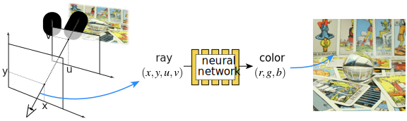
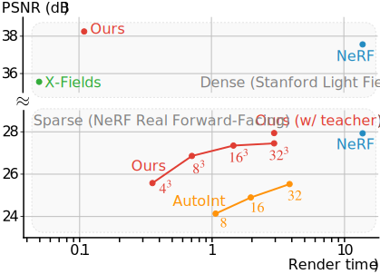

Paper (arXiv)
Paper (arXiv)
 Supplemental Results
Supplemental Results
 Overview Video
Overview Video
 Code
Code
 All Results
Data
All Results
Data
We present Neural Light Fields with Ray-Space Embedding. A light field directly represents integrated radiance along rays. Unlike neural radiance fields, which need many network evaluations to approximate a volume integral, rendering from a light field only requires one evaluation per ray.
However, learning a neural light field is challenging, and using popular coordinate-based neural network architectures leads to poor view synthesis quality. We present a novel ray-space embedding approach to mitigate this challenge. By leveraging ray-space embedding, in addition to subdivision, and soft student-teacher training, our neural light fields provide a more favorable trade-off between quality, speed, and memory than the previous state of the art, as shown in the graph below.
We demonstrate our method on a variety of scenes, both sparsely and densely sampled, from the NeRF's Real Forward-Facing dataset and the Stanford Light Fields dataset. More results, including baseline comparisons and ablations, are found on our supplemental webpage.
Neural radiance fields (NeRFs) produce state-of-the-art view synthesis results. However, they are slow to render, requiring hundreds of network evaluations per pixel to approximate a volume rendering integral. Baking NeRFs into explicit data structures enables efficient rendering, but results in a large increase in memory footprint and, in many cases, a quality reduction. In this paper, we propose a novel neural light field representation that, in contrast, is compact and directly predicts integrated radiance along rays. Our method supports rendering with a single network evaluation per pixel for small baseline light field datasets and can also be applied to larger baselines with only a few evaluations per pixel. At the core of our approach is a ray-space embedding network that maps the 4D ray-space manifold into an intermediate, interpolable latent space. Our method achieves state-of-the-art quality on dense forward-facing datasets such as the Stanford Light Field dataset. In addition, for forward-facing scenes with sparser inputs we achieve results that are competitive with NeRF-based approaches in terms of quality while providing a better speed/quality/memory trade-off with far fewer network evaluations.
@inproceedings{attal2022learning,
author = {Benjamin Attal and Jia-Bin Huang and Michael Zollh{\"o}fer and Johannes Kopf and Changil Kim},
title = {Learning Neural Light Fields with Ray-Space Embedding Networks},
booktitle = {Proceedings of the IEEE/CVF Conference on Computer Vision and Pattern Recognition (CVPR)},
year = {2022},
}